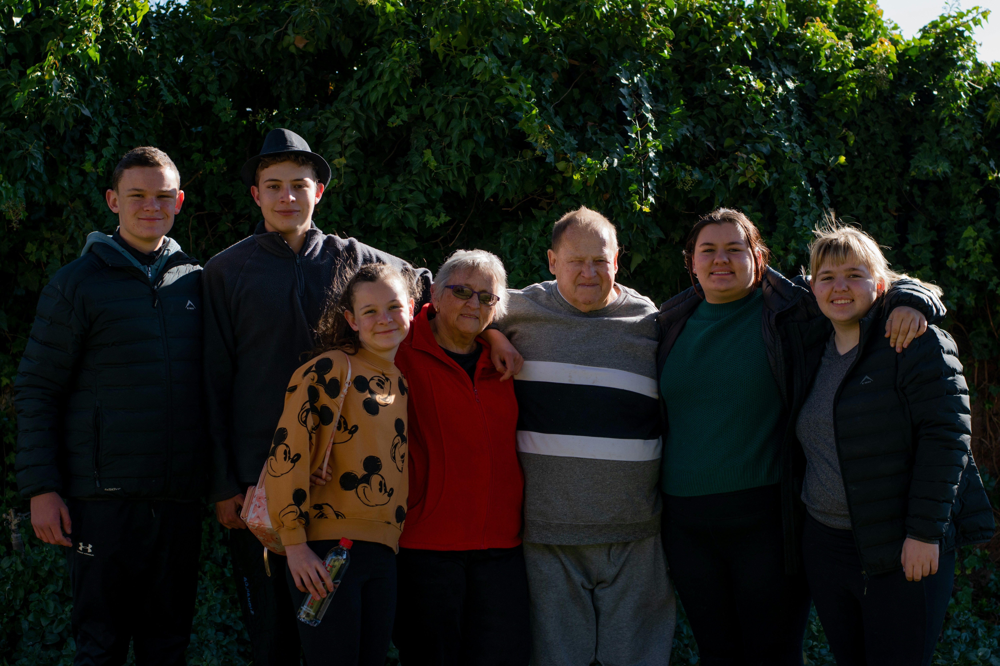
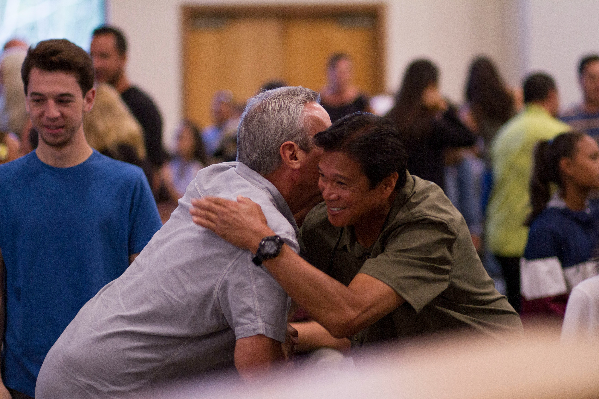

Más allá de la visita dominical
El aislamiento no se soluciona únicamente con grandes eventos familiares esporádicos o visitas protocolares de fin de semana. La verdadera conexión se forja en la rutina, en la integración del adulto mayor a la dinámica diaria del hogar.
Escuchar activamente sus historias, pedirles consejos basados en su experiencia y hacerles partícipes de las decisiones familiares les devuelve el sentido de pertenencia y utilidad que la sociedad, a menudo, les arrebata.
El valor de lo cotidiano
El diálogo intergeneracional se materializa en los actos más sencillos de cuidado. No se trata solo de hacer compañía pasiva, sino de establecer dinámicas donde ambas partes interactúan y se apoyan mutuamente.
Un claro ejemplo de esto es el simple hecho de sentarse juntos a organizar la rutina de toma de medicamentos diarios. Revisar el pastillero, anotar los horarios en una pizarra o configurar alarmas deja de ser una tarea clínica y se transforma en un momento de conexión estructurado. Es un acto de responsabilidad compartida que estimula cognitivamente al adulto mayor y fortalece el vínculo afectivo.

El impacto visual de la compañía


